knitr::opts_chunk$set(eval=TRUE, warning=FALSE, message=FALSE)Appendix C — Extra material
C.1 phyloseq vs TreeSE cheatsheet
This section has a cheatsheet for translating common functions in phyloseq to TreeSE/mia with example code.
Start by loading data as a phyloseq object “phy” and as TreeSE object “tse”.
# Loading example data
# Using GlobalPatterns dataset
data(package = "phyloseq", "GlobalPatterns") # phyloseq object
phy <- GlobalPatterns # Rename
phy # Check the phyloseq object
## phyloseq-class experiment-level object
## otu_table() OTU Table: [ 19216 taxa and 26 samples ]
## sample_data() Sample Data: [ 26 samples by 7 sample variables ]
## tax_table() Taxonomy Table: [ 19216 taxa by 7 taxonomic ranks ]
## phy_tree() Phylogenetic Tree: [ 19216 tips and 19215 internal nodes ]
data(package = "mia", "GlobalPatterns") # TreeSE object
tse <- GlobalPatterns # Rename
tse # Check the tse object
## class: TreeSummarizedExperiment
## dim: 19216 26
## metadata(0):
## assays(1): counts
## rownames(19216): 549322 522457 ... 200359 271582
## rowData names(7): Kingdom Phylum ... Genus Species
## colnames(26): CL3 CC1 ... Even2 Even3
## colData names(7): X.SampleID Primer ... SampleType Description
## reducedDimNames(0):
## mainExpName: NULL
## altExpNames(0):
## rowLinks: a LinkDataFrame (19216 rows)
## rowTree: 1 phylo tree(s) (19216 leaves)
## colLinks: NULL
## colTree: NULL
C.1.1 Accessing different types of data in phyloseq versus TreeSE
Often microbiome datasets contain three different types of tables, one which defines the microbes’ taxonomy from domain to species level, one that describes sample level information like whether the sample is from a healthy or a diseased person, and one that has the abundances of taxa from mapping, like an OTU table.
There are slightly different names for these tables in phyloseq and tse, but they can be retrieved from the phyloseq and tse containers in analogous ways.
Accessing the table of taxonomic names: tax_table = rowData
phyloseq and TreeSE objects’ taxonomy tables can be accessed with tax_table and rowData commands.
phy_taxtable <-
tax_table(phy) |> # Access the phyloseq taxonomic name table
data.frame() # Make into a data frame
tse_taxtable <- rowData(tse) |> # Same for tse
data.frame()Accessing sample data: sample_data = colData
Sample data can be accessed with sample_data and colData commands.
phy_sampledata <-
sample_data(phy) |> data.frame()
tse_sampledata <-
colData(tse) |> data.frame()Accessing operational taxonomic unit (OTU) abundance objects: otu_table = assay
OTU tables can be accessed with otu_table and assay commands. The assay can also hold other types of information like taxa abundances from shotgun metagenomic annotation, or functional gene abundances.
phy_otutable <-
otu_table(phy) |> data.frame()
tse_otutable <-
assay(tse) |> data.frame()C.1.2 Building phyloseq objects vs TreeSE objects: phyloseq = TreeSummarizedExperiment
After learning how to access various data types from TreeSE, let’s see how creating TreeSE objects compares to creating phyloseq objects. We will use the vanilla dataframes we created from the phyloseq object to demonstrate making both types of data objects. These are identical to the equivalent tse dataframes but for demonstration we will use ones created from phy.
Let’s start by checking what we have.
phy_otutable |> head()
## CL3 CC1 SV1 M31Fcsw M11Fcsw M31Plmr M11Plmr F21Plmr M31Tong M11Tong
## 549322 0 0 0 0 0 0 0 0 0 0
## 522457 0 0 0 0 0 0 0 0 0 0
## 951 0 0 0 0 0 0 1 0 0 0
## 244423 0 0 0 0 0 0 0 0 0 0
## 586076 0 0 0 0 0 0 0 0 0 0
## 246140 0 0 0 0 0 0 0 0 0 0
## LMEpi24M SLEpi20M AQC1cm AQC4cm AQC7cm NP2 NP3 NP5 TRRsed1 TRRsed2
## 549322 0 1 27 100 130 1 0 0 0 0
## 522457 0 0 0 2 6 0 0 0 0 0
## 951 0 0 0 0 0 0 0 0 0 0
## 244423 0 0 0 22 29 0 0 0 0 0
## 586076 0 0 0 2 1 0 0 0 0 0
## 246140 0 0 0 1 3 0 0 0 0 0
## TRRsed3 TS28 TS29 Even1 Even2 Even3
## 549322 0 0 0 0 0 0
## 522457 0 0 0 0 0 0
## 951 0 0 0 0 0 0
## 244423 0 0 0 0 0 0
## 586076 0 0 0 0 0 0
## 246140 0 0 0 0 0 0
phy_sampledata |> head()
## X.SampleID Primer Final_Barcode Barcode_truncated_plus_T
## CL3 CL3 ILBC_01 AACGCA TGCGTT
## CC1 CC1 ILBC_02 AACTCG CGAGTT
## SV1 SV1 ILBC_03 AACTGT ACAGTT
## M31Fcsw M31Fcsw ILBC_04 AAGAGA TCTCTT
## M11Fcsw M11Fcsw ILBC_05 AAGCTG CAGCTT
## M31Plmr M31Plmr ILBC_07 AATCGT ACGATT
## Barcode_full_length SampleType
## CL3 CTAGCGTGCGT Soil
## CC1 CATCGACGAGT Soil
## SV1 GTACGCACAGT Soil
## M31Fcsw TCGACATCTCT Feces
## M11Fcsw CGACTGCAGCT Feces
## M31Plmr CGAGTCACGAT Skin
## Description
## CL3 Calhoun South Carolina Pine soil, pH 4.9
## CC1 Cedar Creek Minnesota, grassland, pH 6.1
## SV1 Sevilleta new Mexico, desert scrub, pH 8.3
## M31Fcsw M3, Day 1, fecal swab, whole body study
## M11Fcsw M1, Day 1, fecal swab, whole body study
## M31Plmr M3, Day 1, right palm, whole body study
phy_taxtable |> head()
## Kingdom Phylum Class Order Family
## 549322 Archaea Crenarchaeota Thermoprotei <NA> <NA>
## 522457 Archaea Crenarchaeota Thermoprotei <NA> <NA>
## 951 Archaea Crenarchaeota Thermoprotei Sulfolobales Sulfolobaceae
## 244423 Archaea Crenarchaeota Sd-NA <NA> <NA>
## 586076 Archaea Crenarchaeota Sd-NA <NA> <NA>
## 246140 Archaea Crenarchaeota Sd-NA <NA> <NA>
## Genus Species
## 549322 <NA> <NA>
## 522457 <NA> <NA>
## 951 Sulfolobus Sulfolobusacidocaldarius
## 244423 <NA> <NA>
## 586076 <NA> <NA>
## 246140 <NA> <NA>Ok, these are all normal data frames which could come from upstream bioinformatics, like OTU tables that come from 16S analysis, and taxonomy tables.
Let’s demo how to create the TreeSE object, how it compares to creating phyloseq and how assay in TreeSE compares to otu_table in phyloseq.
# Create phyloseq object
OTU_phy <- otu_table(as.matrix(phy_otutable), taxa_are_rows = TRUE) # Make OTU table
TAX_phy <- tax_table(as.matrix(phy_taxtable)) # Make TAX table
SAMPLE_phy <- sample_data(phy_sampledata) # Make sample data table
phy <- phyloseq(OTU_phy, TAX_phy, SAMPLE_phy) # Combine into phyloseq object
phy # Inspect
## phyloseq-class experiment-level object
## otu_table() OTU Table: [ 19216 taxa and 26 samples ]
## sample_data() Sample Data: [ 26 samples by 7 sample variables ]
## tax_table() Taxonomy Table: [ 19216 taxa by 7 taxonomic ranks ]Let’s start by checking our otu table, and see if it is counts or already normalized. We will use the same data frame extracted from the phy object as before.
# Check if we have counts or normalized data
phy_otutable |> head()
## CL3 CC1 SV1 M31Fcsw M11Fcsw M31Plmr M11Plmr F21Plmr M31Tong M11Tong
## 549322 0 0 0 0 0 0 0 0 0 0
## 522457 0 0 0 0 0 0 0 0 0 0
## 951 0 0 0 0 0 0 1 0 0 0
## 244423 0 0 0 0 0 0 0 0 0 0
## 586076 0 0 0 0 0 0 0 0 0 0
## 246140 0 0 0 0 0 0 0 0 0 0
## LMEpi24M SLEpi20M AQC1cm AQC4cm AQC7cm NP2 NP3 NP5 TRRsed1 TRRsed2
## 549322 0 1 27 100 130 1 0 0 0 0
## 522457 0 0 0 2 6 0 0 0 0 0
## 951 0 0 0 0 0 0 0 0 0 0
## 244423 0 0 0 22 29 0 0 0 0 0
## 586076 0 0 0 2 1 0 0 0 0 0
## 246140 0 0 0 1 3 0 0 0 0 0
## TRRsed3 TS28 TS29 Even1 Even2 Even3
## 549322 0 0 0 0 0 0
## 522457 0 0 0 0 0 0
## 951 0 0 0 0 0 0
## 244423 0 0 0 0 0 0
## 586076 0 0 0 0 0 0
## 246140 0 0 0 0 0 0We have counts!
Since TreeSEs can hold many different versions of the OTU table, most commonly either relative abundances or counts, we will need to give our assay (which corresponds to otu_table in Phyloseq) a name and list the different types of assays or transformations we have. In this example we only have one item ‘counts’ in the list.
Let’s convert the data frame to a matrix and make the list of assays.
# Create TreeSE
counts <- as.matrix(phy_otutable) # Convert to a matrix
assays <- SimpleList(counts = counts)
tse <- TreeSummarizedExperiment(
assays = assays,
colData = phy_sampledata,
rowData = phy_taxtable
)Let’s check the different assay names we have.
assayNames(tse)
## [1] "counts"C.1.3 Handling different OTU table normalizations in phyloseq vs TreeSE
Adding the assays as a list might seem inconvenient if you only have one type of OTU table (counts in our example), but let’s see why it is actually very convenient to be able to hold multiple assays in one data object.
Here we’ll show an example of how to add relative abundances and CLR normalized OTU tables to your tse assays.
With phyloseq you would need three different phyloseq objects, each taking up 7.7 MB of memory, whilst the tse with the three assays takes up only 18.3 MB.
# Add another assay that holds the relative abundance normalized OTU table
tse <- transformAssay(tse, assay.type = "counts", method = "relabundance")
assays(tse) # Let's check
## List of length 2
## names(2): counts relabundance
# With phyloseq you would need to have two different phyloseq objects
phy_relab = transform_sample_counts(phy, function(x)
x / sum(x))
# Let's add clr transformed data just for the fun of it :)
tse <- transformAssay(
tse,
assay.type = "counts",
method = "clr",
pseudocount = 1)
assays(tse) # Let's check
## List of length 3
## names(3): counts relabundance clr
# With phyloseq you would need to have a third phyloseq object.
# phy_CLR <- microbiome::transform(phy, 'clr') # Example, don't runC.1.4 Subsetting samples and taxa
Subsetting samples: subset_samples = indexing columns
Next let’s learn how to subset samples. In phyloseq we use subset_samples command, but since the sample data is stored in columns in the TreeSe, we can access it by indexing columns.
In this section we will remove the “Mock” samples and make new data objects.
phy_nomock <- subset_samples(
phy, !SampleType == "Mock") # Removing mock samples in phyloseq
tse_nomock <- tse[,!tse$SampleType == "Mock"] # tse uses indexing columnsLet’s see what we have now.
phy |> sample_names() |> length()
## [1] 26
phy_nomock |> sample_names() |> length()
## [1] 23
colnames(tse) |> length()
## [1] 26
colnames(tse_nomock) |> length()
## [1] 23We have removed three samples that where SampleType “Mock”.
Subsetting taxa: subset_taxa = indexing rows
Taxa are stored in rows in TreeSE and the TreeSE equivalent to subset_taxa is indexing rows.
phy_nomock_bacteria <-
subset_taxa(phy_nomock, Kingdom == "Bacteria")
tse_nomock_bacteria <-
tse[tse$Kingdom == "Bacteria", ]
phy_nomock_bacteria # We have 19008 taxa (only bacteria) and before 19216
## phyloseq-class experiment-level object
## otu_table() OTU Table: [ 19008 taxa and 23 samples ]
## sample_data() Sample Data: [ 23 samples by 7 sample variables ]
## tax_table() Taxonomy Table: [ 19008 taxa by 7 taxonomic ranks ]
tse_nomock_bacteria
## class: TreeSummarizedExperiment
## dim: 0 26
## metadata(0):
## assays(3): counts relabundance clr
## rownames(0):
## rowData names(7): Kingdom Phylum ... Genus Species
## colnames(26): CL3 CC1 ... Even2 Even3
## colData names(7): X.SampleID Primer ... SampleType Description
## reducedDimNames(0):
## mainExpName: NULL
## altExpNames(0):
## rowLinks: NULL
## rowTree: NULL
## colLinks: NULL
## colTree: NULLC.1.5 Calculating alpha diversity: estimate_richness = estimateDiversity
Now we know how data stored in TreeSE can be accessed and the TreeSE data objects created. Let’s look at how we can calculate alpha diversity using mia compared to phyloseq package.
The mia command estimateDiversity() will return a TreeSE and the results are stored in colData, unlike the phyloseq command that outputs a data frame with just the diversity estimates.
In phyloseq you would need to add the alpha diversity separately to your sample data to keep it safe with the other sample level data.
# Alpha diversity with phyloseq
df <- estimate_richness(phy, measures = "Shannon")
df |> head() # Inspect
## Shannon
## CL3 6.576517
## CC1 6.776603
## SV1 6.498494
## M31Fcsw 3.828368
## M11Fcsw 3.287666
## M31Plmr 4.289269
# Add Shannon to the sample_data to keep results safe with other sample data
phy_sampledata <- sample_data(phy) |> data.frame()
phy_sampledata$shannon <- df$Shannon
sample_data(phy) <- phy_sampledata
sample_data(phy) |> head() # Inspect
## X.SampleID Primer Final_Barcode Barcode_truncated_plus_T
## CL3 CL3 ILBC_01 AACGCA TGCGTT
## CC1 CC1 ILBC_02 AACTCG CGAGTT
## SV1 SV1 ILBC_03 AACTGT ACAGTT
## M31Fcsw M31Fcsw ILBC_04 AAGAGA TCTCTT
## M11Fcsw M11Fcsw ILBC_05 AAGCTG CAGCTT
## M31Plmr M31Plmr ILBC_07 AATCGT ACGATT
## Barcode_full_length SampleType
## CL3 CTAGCGTGCGT Soil
## CC1 CATCGACGAGT Soil
## SV1 GTACGCACAGT Soil
## M31Fcsw TCGACATCTCT Feces
## M11Fcsw CGACTGCAGCT Feces
## M31Plmr CGAGTCACGAT Skin
## Description shannon
## CL3 Calhoun South Carolina Pine soil, pH 4.9 6.576517
## CC1 Cedar Creek Minnesota, grassland, pH 6.1 6.776603
## SV1 Sevilleta new Mexico, desert scrub, pH 8.3 6.498494
## M31Fcsw M3, Day 1, fecal swab, whole body study 3.828368
## M11Fcsw M1, Day 1, fecal swab, whole body study 3.287666
## M31Plmr M3, Day 1, right palm, whole body study 4.289269For the tse we will need to specify which assay (which normalization of the OTU table) we want to use, since we have three options now with the counts, relative abundance and CLR. We can check the assay names first.
assayNames(tse) # Check the assay names
## [1] "counts" "relabundance" "clr"
tse <- estimateDiversity(tse, assay.type = "counts", index = "shannon") # Let's use counts
# Inspect the new colData with added alpha diversity estimate
colData(tse) |> names() # shannon has been added to the colData
## [1] "X.SampleID" "Primer"
## [3] "Final_Barcode" "Barcode_truncated_plus_T"
## [5] "Barcode_full_length" "SampleType"
## [7] "Description" "shannon"If we want to extract a data frame that only has the alpha diversity it can be done easily.
# Extract
df <- colData(tse) |> data.frame() |> dplyr::select(matches("shannon"))C.1.6 Calculating beta diversity: ordinate = runMDS
We can calculate PCoA with Bray-Curtis distances in phyloseq using the ordinate() command. The beta diversity calculation in mia outputs a TreeSE with a new type of data, reduced dimensions or reducedDim.
Here we will use the scater package that runs the PCoA with runMDS(). (PCoA and MDS mean the same thing)
In phyloseq you would again need to add the dimensions to the sample data if you want to keep them safe with other metadata.
# Run PCoA on the relative abundance data and store in phy_ord list
phy_ord <- ordinate(phy_relab, method = "PCoA", distance = "bray")
library(scater)
# Ordinate with runMDS and implement the vegan's Bray-Curtis dissimilarity
# distance calculation
tse <- runMDS(
tse,
FUN = getDissimilarity,
method = "bray",
assay.type = "relabundance",
name = "MDS_bray",
ncomponents = 10) # Let's also define how many dimensions
tse # Inspect, now we have new reducedDim "MDS_bray"
## class: TreeSummarizedExperiment
## dim: 19216 26
## metadata(0):
## assays(3): counts relabundance clr
## rownames(19216): 549322 522457 ... 200359 271582
## rowData names(7): Kingdom Phylum ... Genus Species
## colnames(26): CL3 CC1 ... Even2 Even3
## colData names(8): X.SampleID Primer ... Description shannon
## reducedDimNames(1): MDS_bray
## mainExpName: NULL
## altExpNames(0):
## rowLinks: NULL
## rowTree: NULL
## colLinks: NULL
## colTree: NULL
C.1.7 Plotting ordinations: plot_ordination() = plotReducedDim()
phyloseq has it’s own plotting fuction for ordinations.
plot_ordination(physeq = phy, ordination = phy_ord, color = "SampleType")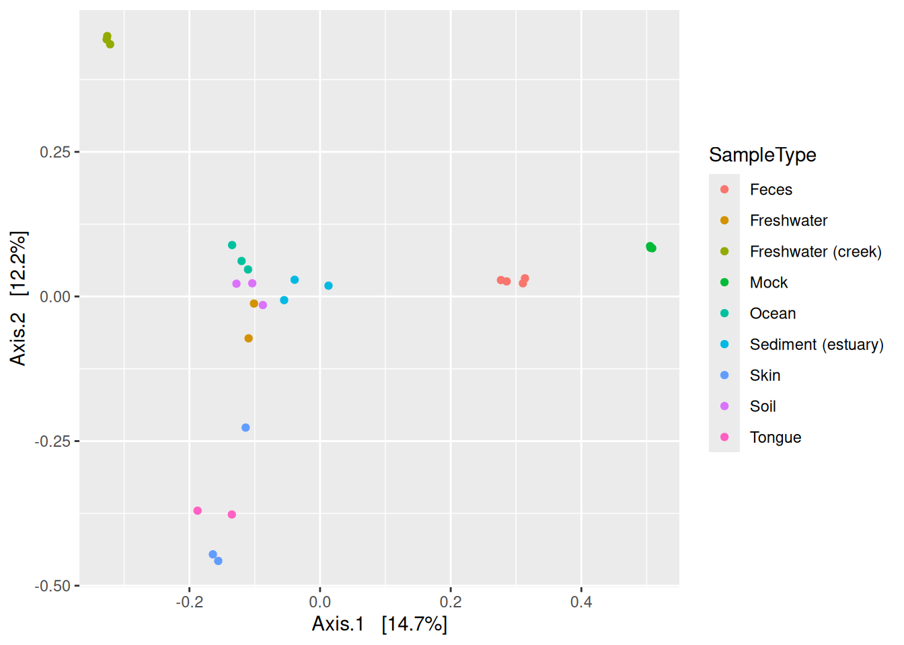
It is also easy to plot the ordination stored in reducedDim in the tse using the plotReducedDim() function. We can first check what the name of the Bray-Curtis MDS/PCoA was incase we forgot.
# Check reduced dim names
reducedDimNames(tse)
## [1] "MDS_bray"Ok, let’s plot.
# Plot
plotReducedDim(tse, "MDS_bray", color_by = "SampleType")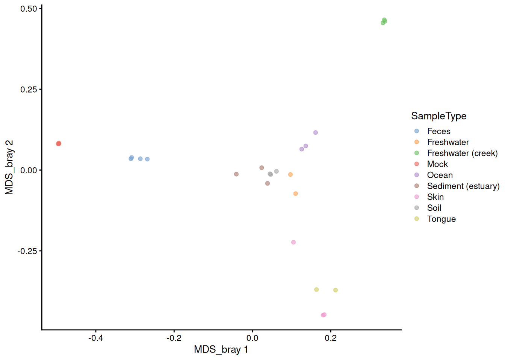
# The sign is given arbitrarily. We can change it to match the plot_ordination
reducedDim(tse)[, 1] <- -reducedDim(tse)[, 1]
reducedDim(tse)[, 2] <- -reducedDim(tse)[, 2]
plotReducedDim(tse, "MDS_bray", color_by = "SampleType")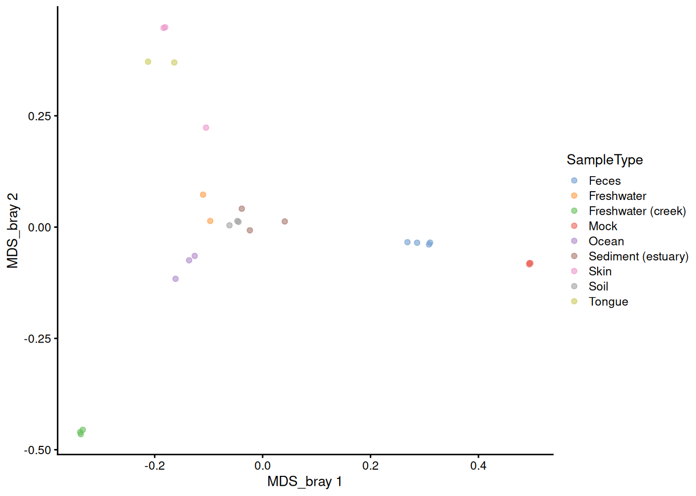
C.1.8 Agglomerating taxa: tax_glom() = agglomerateByRank()
Often you might want to study your data using different taxonomic ranks, for example check if you see differences in the abundances of higher taxonomic levels.
phy_fam <- tax_glom(phy, taxrank = "Family")This family level data object can again be conveniently stored in a tse object under altExp.
tax_glom() removes the taxa which have not been assigned to the level given in taxrank by default (NArm = TRUE). So we will add the na.rm = TRUE to agglomerateByRank() function which is equivalent to the default behaviour of tax_glom().
altExp(tse, "Family") <- agglomerateByRank(tse, rank = "Family")
altExp(tse, "Family")
## class: TreeSummarizedExperiment
## dim: 341 26
## metadata(1): agglomerated_by_rank
## assays(3): counts relabundance clr
## rownames(341): 125ds10 211ds20 ... vadinHA31 wb1_P06
## rowData names(7): Kingdom Phylum ... Genus Species
## colnames(26): CL3 CC1 ... Even2 Even3
## colData names(8): X.SampleID Primer ... Description shannon
## reducedDimNames(1): MDS_bray
## mainExpName: NULL
## altExpNames(0):
## rowLinks: NULL
## rowTree: NULL
## colLinks: NULL
## colTree: NULLC.1.9 Cheatsheet
| Functionality | phyloseq | mia.TreeSE |
|---|---|---|
| Access sample data | sample_data() | Index columns |
| Access tax table | tax_table() | Index rows |
| Access OTU table | otu_table() | assays() |
| Build data object | phyloseq() | TreeSummarizedExperiment() |
| Calculate alpha diversity | estimate_richness() | estimateDiversity() |
| Calculate beta diversity | ordinate() | runMDS() |
| Plot ordination | plot_ordination() | plotReducedDim() |
| Subset taxa | subset_taxa() | Index rows |
| Subset samples | subset_samples() | Index columns |
| Aggromerate taxa | tax_glom() | agglomerateByRank() |
| Data_type | phyloseq | TreeSE |
|---|---|---|
| OTU table | otu_table | assay |
| Taxonomy table | tax_table | rowData |
| Sample data table | sample_data | colData |
C.2 16S workflow
Result of amplicon sequencing is a large number of files that include all the sequences that were read from samples. Those sequences need to be matched with taxa. Additionally, we need to know how many times each taxa were found from each sample.
There are several algorithms to do that, and DADA2 is one of the most common. You can find DADA2 pipeline tutorial, for example, here. After the DADA2 portion of the tutorial is completed, the data is stored into phyloseq object (Bonus: Handoff to phyloseq). To store the data to TreeSE, follow the example below.
You can find full workflow script without further explanations and comments from Rmd file
Load required packages.
Create arbitrary example sample metadata like it was done in the tutorial. Usually, sample metadata is imported as a file.
samples.out <- rownames(seqtab.nochim)
subject <- sapply(strsplit(samples.out, "D"), `[`, 1)
gender <- substr(subject,1,1)
subject <- substr(subject,2,999)
day <- as.integer(sapply(strsplit(samples.out, "D"), `[`, 2))
samdf <- data.frame(Subject=subject, Gender=gender, Day=day)
samdf$When <- "Early"
samdf$When[samdf$Day>100] <- "Late"
rownames(samdf) <- samples.outConvert data into right format and create a _TreeSE_ object.
# Create a list that contains assays
counts <- t(seqtab.nochim)
counts <- as.matrix(counts)
assays <- SimpleList(counts = counts)
# Convert `colData` and `rowData` into `DataFrame`
samdf <- DataFrame(samdf)
taxa <- DataFrame(taxa)
# Create TreeSE
tse <- TreeSummarizedExperiment(
assays = assays,
colData = samdf,
rowData = taxa
)
# Remove mock sample like it is also done in DADA2 pipeline tutorial
tse <- tse[ , colnames(tse) != "mock"]Add sequences into referenceSeq slot and convert rownames into simpler format.
# Convert sequences into right format
dna <- Biostrings::DNAStringSet( rownames(tse) )
# Add sequences into referenceSeq slot
referenceSeq(tse) <- dna
# Convert rownames into ASV_number format
rownames(tse) <- paste0("ASV", seq( nrow(tse) ))
tse
## class: TreeSummarizedExperiment
## dim: 232 20
## metadata(0):
## assays(1): counts
## rownames(232): ASV1 ASV2 ... ASV231 ASV232
## rowData names(7): Kingdom Phylum ... Genus Species
## colnames(20): F3D0 F3D1 ... F3D9 Mock
## colData names(4): Subject Gender Day When
## reducedDimNames(0):
## mainExpName: NULL
## altExpNames(0):
## rowLinks: NULL
## rowTree: NULL
## colLinks: NULL
## colTree: NULL
## referenceSeq: a DNAStringSet (232 sequences)C.3 Bayesian Multinomial Logistic-Normal Models {sec-fido}
Analysis using such model could be performed with the function pibble() from the fido package, wihch is in form of a Multinomial Logistic-Normal Linear Regression model; see vignette of package.
The following presents such an exemplary analysis based on the data of Sprockett et al. (2020) available through microbiomeDataSets package.
Sprockett, Daniel D., Melanie Martin, Elizabeth K. Costello, Adam R. Burns, Susan P. Holmes, Michael D. Gurven, and David A. Relman. 2020. “Microbiota Assembly, Structure, and Dynamics Among Tsimane Horticulturalists of the Bolivian Amazon.” Nat Commun 11 (1): 3772. https://doi.org/10.1038/s41467-020-17541-6.
Loading the libraries and importing data:
library(microbiomeDataSets)
tse <- SprockettTHData()We pick three covariates (“Sex”,“Age_Years”,“Delivery_Mode”) during this analysis as an example, and beforehand we check for missing data:
We drop missing values of the covariates:
We agglomerate microbiome data to Phylum:
tse_phylum <- agglomerateByRank(tse, "Phylum")We extract the counts assay and covariate data to build the model matrix:
Y <- assays(tse_phylum)$counts
# design matrix
# taking 3 covariates
sample_data<-as.data.frame(colData(tse_phylum)[,cov_names])
X <- t(model.matrix(~Sex+Age_Years+Delivery_Mode,data=sample_data))Building the parameters for the pibble() call to build the model; see more at vignette:
Automatically initializing the priors and visualizing their distributions:
priors <- pibble(NULL, X, upsilon, Theta, Gamma, Xi)
names_covariates(priors) <- rownames(X)
plot(priors, pars="Lambda") + ggplot2::xlim(c(-5, 5))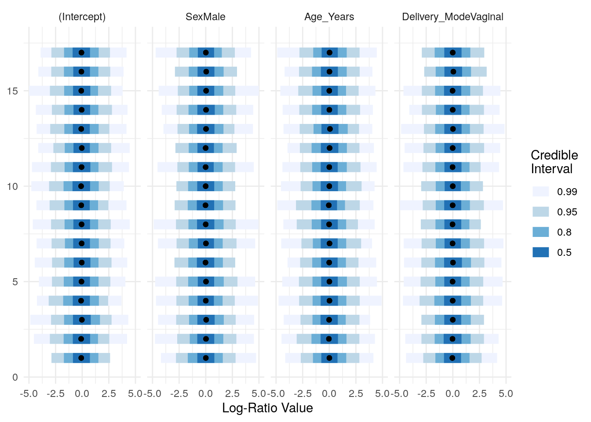
Estimating the posterior by including our response data Y. Note: Some computational failures could occur (see discussion) the arguments multDirichletBoot calcGradHess could be passed in such case.
priors$Y <- Y
posterior <- refit(priors, optim_method="adam", multDirichletBoot=0.5) #calcGradHess=FALSEPrinting a summary about the posterior:
ppc_summary(posterior)
## Proportions of Observations within 95% Credible Interval: 0.9967794Plotting the summary of the posterior distributions of the regression parameters:
names_categories(posterior) <- rownames(Y)
plot(posterior,par="Lambda",focus.cov=rownames(X)[2:4])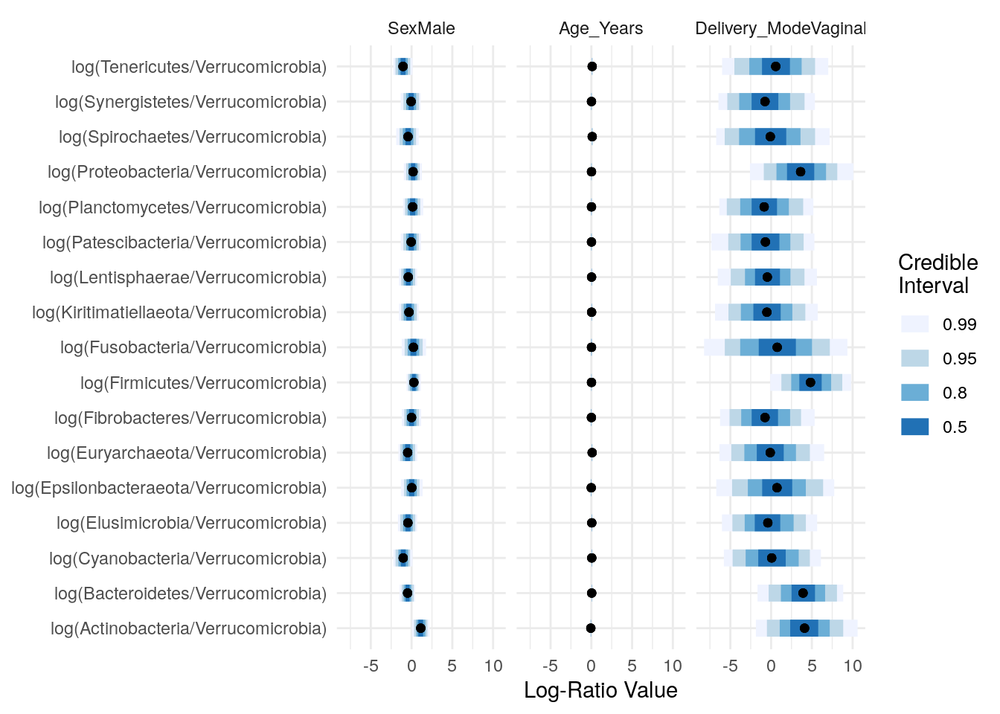
Taking a closer look at “Sex” and “Delivery_Mode”:
C.4 Biclustering
Biclustering methods cluster rows and columns simultaneously in order to find subsets of correlated features/samples.
Here, we use following packages:
cobiclust is especially developed for microbiome data whereas biclust is more general method. In this section, we show two different cases and example solutions to apply biclustering to them.
- Taxa vs samples
- Taxa vs biomolecule/biomarker
Biclusters can be visualized using heatmap or boxplot, for instance. For checking purposes, also scatter plot might be valid choice.
Check out more ideas for heatmaps from chapters Appendix D and Chapter 12.
C.4.1 Taxa vs samples
When you have microbial abundance matrices, we suggest to use cobiclust which is designed for microbial data.
Load example data
Only the most prevalent taxa are included in analysis.
# Subset data in the first experiment
mae[[1]] <- subsetByPrevalent(
mae[[1]], rank = "Genus", prevalence = 0.2, detection = 0.001)
# rclr-transform in the first experiment
mae[[1]] <- transformAssay(mae[[1]], method = "rclr")cobiclust() takes counts table as an input and gives cobiclust object as an output. It includes clusters for taxa and samples.
# Do clustering using counts table
clusters <- cobiclust(assay(mae[[1]], "counts"))
# Get clusters
row_clusters <- clusters$classification$rowclass
col_clusters <- clusters$classification$colclass
# Add clusters to rowdata and coldata
rowData(mae[[1]])$clusters <- factor(row_clusters)
colData(mae[[1]])$clusters <- factor(col_clusters)
# Order data based on clusters
mae[[1]] <- mae[[1]][
order(rowData(mae[[1]])$clusters), order(colData(mae[[1]])$clusters)]
# Print clusters
clusters$classification
## $rowclass
## [1] 1 1 1 1 1 1 1 1 1 1 2 2 1 2 1 1 1 1 1 2 1 1 2 1 1 2 1 1 1 1 1 1 1 1 1 1
## [37] 2 2 1 1 2 1 1 1 1 1 1 1 1 1 1 1 1 1 1 2 1 1 1 2 1 1 1 2 1 2 1 1 1 1 1 1
## [73] 1 1 2 2 1 1 1 1 1 1 2 1 1 1 1 1 1 1 2 2 1 1 2 1 1 2 2 1 1 1 1 1 2 1 1 1
## [109] 2 1 1 1 1 1 1 1 1 1 1 2 2 1 1 1 1 2 1 1 2 2 1 1 1
##
## $colclass
## C1 C2 C3 C4 C5 C6 C7 C8 C9 C10 C11 C12 C13 C14 C15 C16 C17 C18 C19
## 1 2 2 2 2 2 2 2 2 2 2 2 2 2 2 2 2 2 2
## C20 C21 C22 C23 C24 C25 C26 C27 C28 C29 C30 C31 C32 C33 C34 C35 C36 C37 C38
## 2 2 3 3 3 3 3 3 3 3 3 3 3 3 3 3 3 3 3
## C39 C40
## 3 1Next we can plot clusters. Annotated heatmap is a common choice.
library(ComplexHeatmap)
# z-transform for heatmap
mae[[1]] <- transformAssay(
mae[[1]], assay.type = "rclr", MARGIN = "features", method = "z",
name = "rclr_z")
# Create annotations. When column names are equal, they should share levels.
# Here samples include 3 clusters, and taxa 2. That is why we have to make
# column names unique.
annotation_col <- data.frame(colData(mae[[1]])[, "clusters", drop = FALSE])
colnames(annotation_col) <- "col_clusters"
annotation_row <- data.frame(rowData(mae[[1]])[, "clusters", drop = FALSE])
colnames(annotation_row) <- "row_clusters"Plot the heatmap.
pheatmap(
assay(mae[[1]], "rclr_z"), cluster_rows = F, cluster_cols = F,
annotation_col = annotation_col, annotation_row = annotation_row)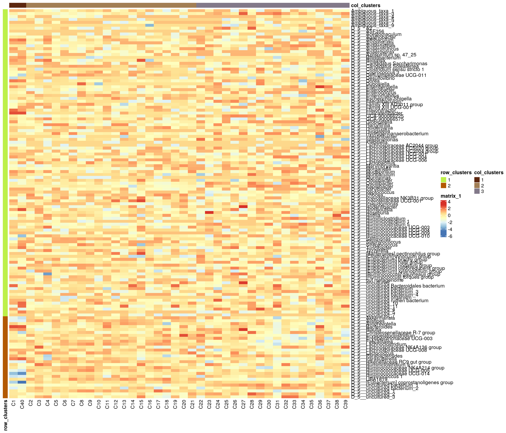
Boxplot is commonly used to summarize the results:
library(ggplot2)
library(patchwork)
# ggplot requires data in melted format
melt_assay <- meltSE(
mae[[1]], assay.type = "rclr",
add_col_data = TRUE, add_row_data = TRUE)
# patchwork two plots side-by-side
p1 <- ggplot(melt_assay) +
geom_boxplot(aes(x = clusters.x, y = rclr)) +
labs(x = "Taxa clusters")
p2 <- ggplot(melt_assay) +
geom_boxplot(aes(x = clusters.y, y = rclr)) +
labs(x = "Sample clusters")
p1 + p2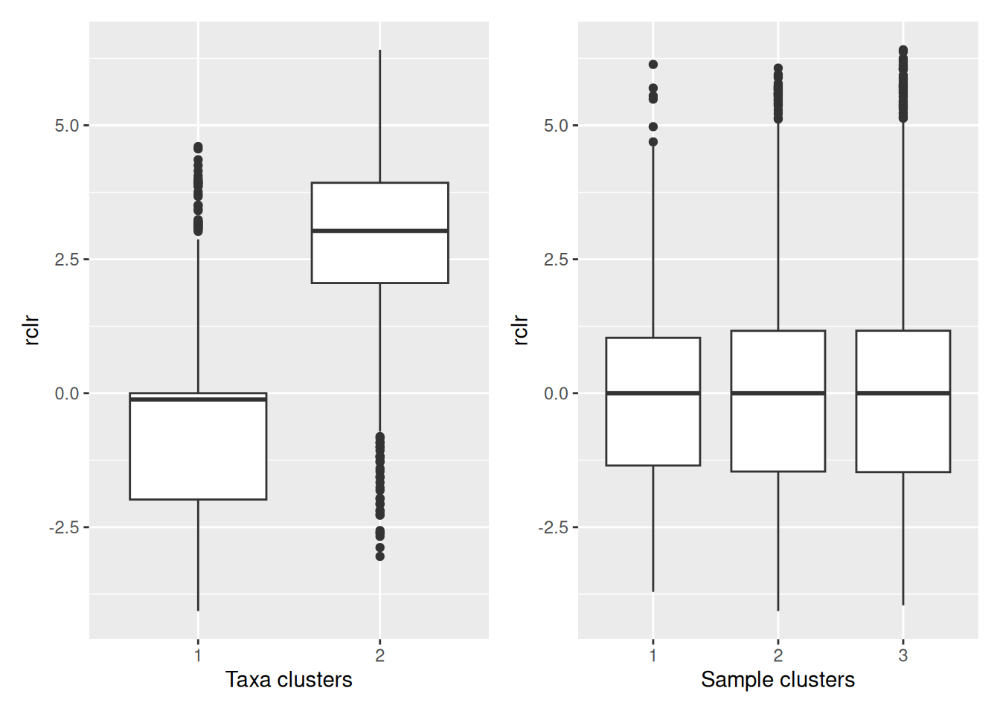
C.4.2 Taxa vs biomolecules
Here, we analyze cross-correlation between taxa and metabolites. This is a case, where we use biclust method which is suitable for numeric matrices in general. First we pre-process the data.
# Samples must be in equal order
# (Only 1st experiment was ordered in cobiclust step leading to unequal order)
mae[[1]] <- mae[[1]][, colnames(mae[[2]])]
# Make rownames unique, since it is required by other steps
rownames(mae[[1]]) <- make.unique(rownames(mae[[1]]))
# Transform the metabolites to be in log basis
mae[[2]] <- transformAssay(mae[[2]], assay.type = "nmr", method = "log10")
# Add missing data to the metabolites
replace_na <- function(row) {
na_indices <- which(is.na(row))
non_na_values <- row[!is.na(row)]
row[na_indices] <- sample(non_na_values, length(na_indices), replace = TRUE)
row
}
assay(mae[[2]], "log10") <- t(apply(assay(mae[[2]], "log10"), 1, replace_na))Next, we compute the Spearman correlation matrix.
# Calculate correlations
corr <- getExperimentCrossCorrelation(
mae, 1, 2, assay.type1 = "rclr", assay.type2 = "log10",
mode = "matrix", correlation = "spearman")biclust() takes a matrix as an input and returns a biclust object.
library(biclust)
# Set seed for reproducibility
set.seed(3973)
# Find biclusters
bc <- biclust(corr, method = BCPlaid(), verbose = FALSE)
bc
##
## An object of class Biclust
##
## call:
## biclust(x = corr, method = BCPlaid(), verbose = FALSE)
##
## Number of Clusters found: 4
##
## First 4 Cluster sizes:
## BC 1 BC 2 BC 3 BC 4
## Number of Rows: 16 16 19 3
## Number of Columns: 12 14 9 9The object includes cluster information. However compared to cobiclust, biclust object includes only information about clusters that were found, not general cluster.
Meaning that if one cluster size of 5 features was found out of 20 features, those 15 features do not belong to any cluster. That is why we have to create an additional cluster for features/samples that are not assigned into any cluster.
# Functions for obtaining biclust information
# Get clusters for rows and columns
.get_biclusters_from_biclust <- function(bc, assay) {
# Get cluster information for columns and rows
bc_columns <- t(bc@NumberxCol)
bc_columns <- data.frame(bc_columns)
bc_rows <- bc@RowxNumber
bc_rows <- data.frame(bc_rows)
# Get data into right format
bc_columns <- .manipulate_bc_data(bc_columns, assay, "col")
bc_rows <- .manipulate_bc_data(bc_rows, assay, "row")
return(list(bc_columns = bc_columns, bc_rows = bc_rows))
}
# Input clusters, and how many observations there should be, i.e.,
# the number of samples or features
.manipulate_bc_data <- function(bc_clusters, assay, row_col) {
# Get right dimension
dim <- ifelse(row_col == "col", ncol(assay), nrow(assay))
# Get column/row names
if (row_col == "col") {
names <- colnames(assay)
} else {
names <- rownames(assay)
}
# If no clusters were found, create one. Otherwise create additional
# cluster which
# contain those samples that are not included in clusters that were found.
if (nrow(bc_clusters) != dim) {
bc_clusters <- data.frame(cluster = rep(TRUE, dim))
} else {
# Create additional cluster that includes those samples/features that
# are not included in other clusters.
vec <- ifelse(rowSums(bc_clusters) > 0, FALSE, TRUE)
# If additional cluster contains samples, then add it
if (any(vec)) {
bc_clusters <- cbind(bc_clusters, vec)
}
}
# Adjust row and column names
rownames(bc_clusters) <- names
colnames(bc_clusters) <- paste0("cluster_", 1:ncol(bc_clusters))
return(bc_clusters)
}# Get biclusters
bcs <- .get_biclusters_from_biclust(bc, corr)
bicluster_rows <- bcs$bc_rows
bicluster_columns <- bcs$bc_columns
# Print biclusters for rows
bicluster_rows |> head()
## cluster_1 cluster_2 cluster_3 cluster_4 cluster_5
## Ambiguous_taxa_1 FALSE FALSE FALSE FALSE TRUE
## Ambiguous_taxa_3 TRUE FALSE TRUE FALSE FALSE
## Ambiguous_taxa_4 FALSE FALSE FALSE FALSE TRUE
## Ambiguous_taxa_5 FALSE FALSE FALSE FALSE TRUE
## Ambiguous_taxa_7 FALSE FALSE FALSE FALSE TRUE
## Ambiguous_taxa_9 FALSE FALSE FALSE FALSE TRUELet’s collect information for the scatter plot.
# Function for obtaining sample-wise sum, mean, median, and mean variance
# for each cluster
.sum_mean_median_var <- function(tse1, tse2, assay.type1, assay.type2, clusters1, clusters2) {
list <- list()
# Create a data frame that includes all the information
for (i in 1:ncol(clusters1)) {
# Subset data based on cluster
tse_subset1 <- tse1[clusters1[, i], ]
tse_subset2 <- tse2[clusters2[, i], ]
# Get assay
assay1 <- assay(tse_subset1, assay.type1)
assay2 <- assay(tse_subset2, assay.type2)
# Calculate sum, mean, median, and mean variance
sum1 <- colSums2(assay1, na.rm = T)
mean1 <- colMeans2(assay1, na.rm = T)
median1 <- colMedians(assay1, na.rm = T)
var1 <- colVars(assay1, na.rm = T)
sum2 <- colSums2(assay2, na.rm = T)
mean2 <- colMeans2(assay2, na.rm = T)
median2 <- colMedians(assay2, na.rm = T)
var2 <- colVars(assay2, na.rm = T)
list[[i]] <- data.frame(sample = colnames(tse1), sum1, sum2, mean1,
mean2, median1, median2, var1, var2)
}
return(list)
}
# Calculate info
df <- .sum_mean_median_var(mae[[1]], mae[[2]], "rclr", "log10", bicluster_rows, bicluster_columns)Now we can create a scatter plot. X-axis includes median clr abundance of microbiome and y-axis median absolute concentration of each metabolite. Each data point represents a single sample.
From the plots, we can see that there is low negative correlation in both cluster 1 and 3. This means that when abundance of bacteria belonging to cluster 1 or 3 is higher, the concentration of metabolites of cluster 1 or 3 is lower, and vice versa.
pics <- list()
for (i in seq_along(df)) {
pics[[i]] <- ggplot(df[[i]]) +
geom_point(aes(x = median1, y = median2)) +
labs(title = paste0("Cluster ", i), x = "Taxa (rclr median)",
y = "Metabolites (abs. median)")
print(pics[[i]])
}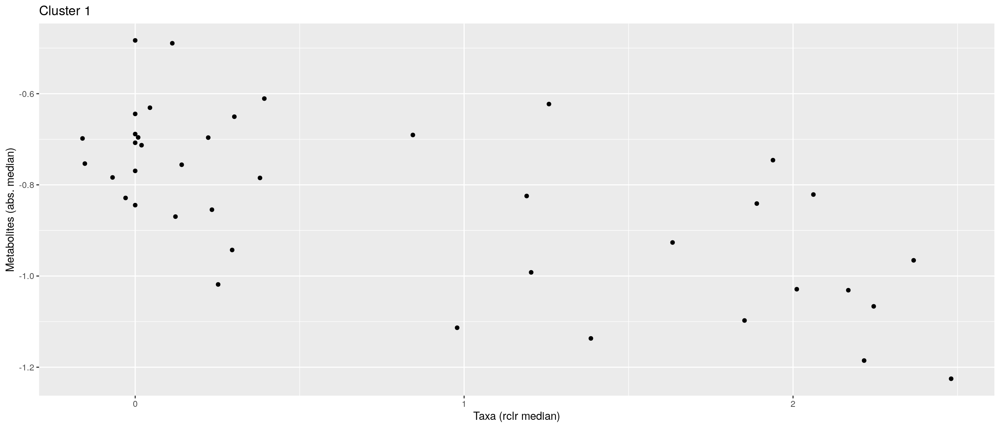
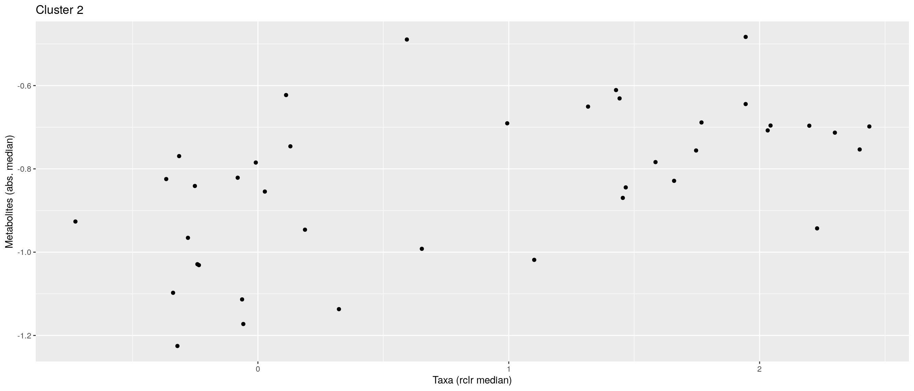
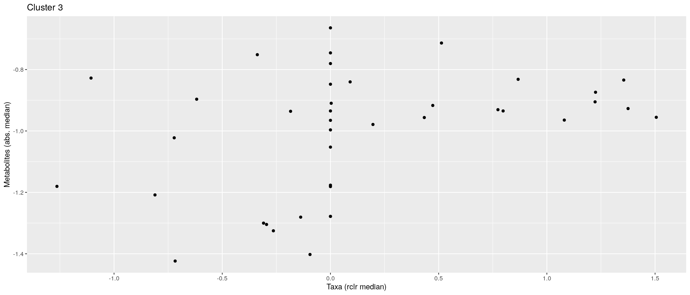
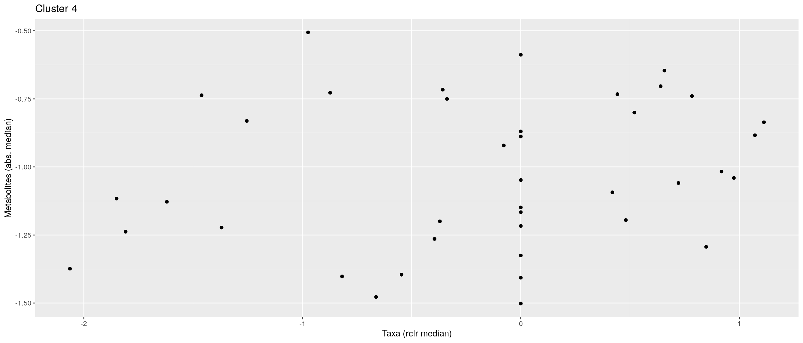
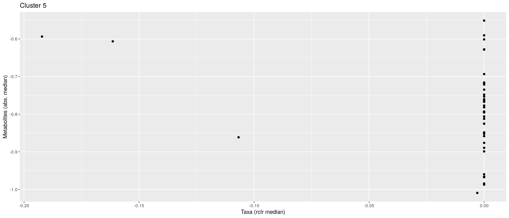
pics[[1]] + pics[[2]] + pics[[3]]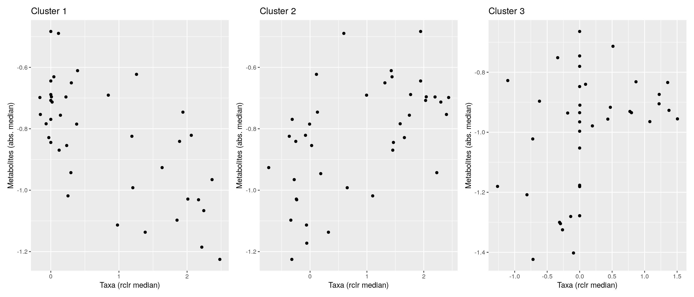
pheatmap does not allow boolean values, so they must be converted into factors.
bicluster_columns <- data.frame(apply(bicluster_columns, 2, as.factor))
bicluster_rows <- data.frame(apply(bicluster_rows, 2, as.factor))Again, we can plot clusters with heatmap.
# Adjust colors for all clusters
if (ncol(bicluster_rows) > ncol(bicluster_columns)) {
cluster_names <- colnames(bicluster_rows)
} else {
cluster_names <- colnames(bicluster_columns)
}
annotation_colors <- list()
for (name in cluster_names) {
annotation_colors[[name]] <- c("TRUE" = "red", "FALSE" = "white")
}
# Create a heatmap
pheatmap(corr, cluster_cols = F, cluster_rows = F,
annotation_col = bicluster_columns, annotation_row = bicluster_rows,
annotation_colors = annotation_colors)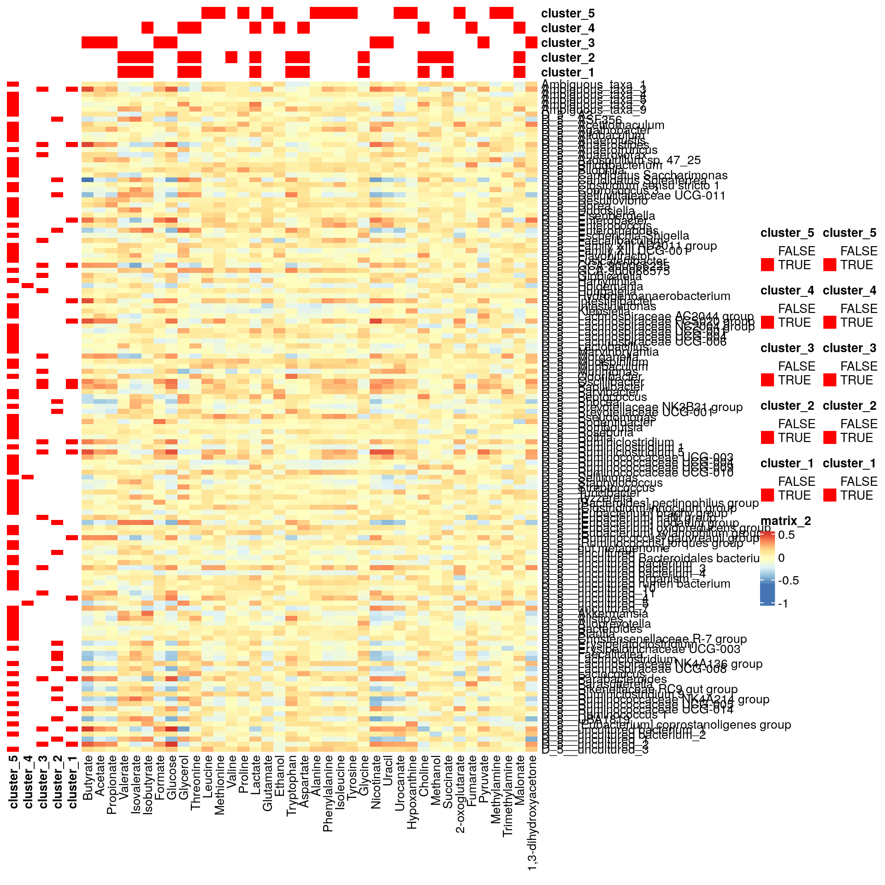